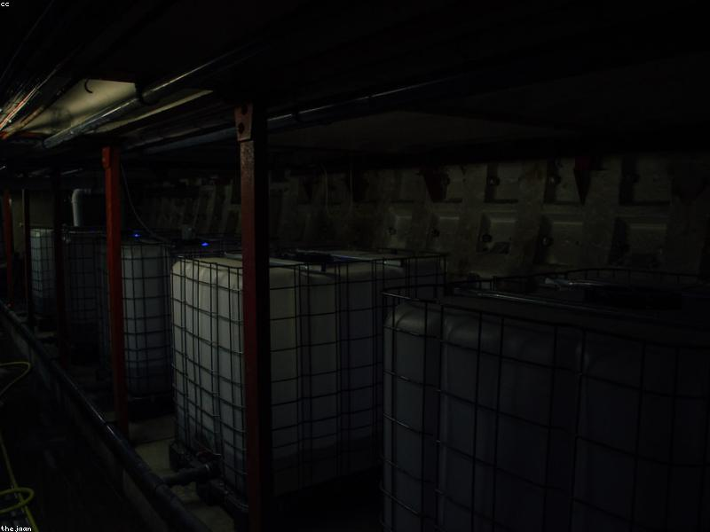

AI Agent
Development
Building autonomous LLM-powered agents with prompt engineering, tool use, and multi-step reasoning. Work spans NeuralSeek's enterprise AI platform and Micro1's candidate assessment systems.
View experience →